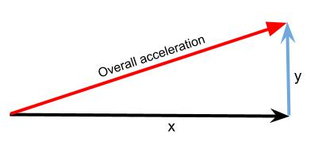

Accelerometer¶
As its name suggests, the accelerometer on a BBC micro:bit measures acceleration. The accelerometer is set to measure acceleration values in the range +2g to -2g, and cannot be changed with MicroPython so far. These values are registered on a scale of values in range 0 .. 1024.
{kind=link}
The micro:bit measures movement along three axes:
X - tilting from left to right.
Y - tilting forwards and backwards.
Z - moving up and down.
Basic Functions¶
The measurement for each axis is a positive or negative number indicating a value in milli-g’s. When the reading is 0 you are “level” along that particular axis.
You can access acceleration measurements one at a time or get all three values at once and store them in a list. You can learn more about lists in the basics of programming section, but for now, just use the following code:
from microbit import *
while True:
x = accelerometer.get_x()
y = accelerometer.get_y()
z = accelerometer.get_z()
print("x, y, z:", x, y, z)
sleep(500)
Upload this and open the serial monitor. Hold the micro:bit flat with the LEDs uppermost. You should see that the X and Y accelerations are near to zero, and the Z acceleration is close to -1024. This tells you that gravity is acting downwards relative to the micro:bit. Flip the board over so the LEDs are nearest the floor. The Z value should become positive at +1024 milli-g. If you shake the micro:bit vigorously enough, you’ll see that the accelerations go up to ±2048 milli-g. That’s because this accelerometer is set to measure a maximum of ±2048 milli-g: the true number might be higher than that.
If you’ve ever wondered how a mobile phone knows which way to orient its screen, it’s because it uses an accelerometer in exactly the same way as the program above. Game controllers also contain accelerometers to enable steering.
Gestures¶
The really interesting side-effect of having an accelerometer is gesture detection. If you move your BBC micro:bit in a certain way (as a gesture) then micro:bit is able to detect this.
micro:bit is able to recognise the following gestures: up, down,
left, right, face up, face down, freefall, 3g, 6g,
8g, shake. Gestures are always represented as strings. While most of
the names should be obvious, the 3g, 6g and 8g gestures apply when
the device encounters these levels of g-force.
To get the current gesture use the accelerometer.current_gesture method.
Its result is going to be one of the named gestures listed above. For example,
this program will display a happy emoticon if it’s face up:
from microbit import *
while True:
gesture = accelerometer.current_gesture()
if gesture == "face up":
display.show(Image.HAPPY)
else:
display.show(Image.ANGRY)
Within the scope of the loop the current gesture is
read and assigned to gesture. The if conditional checks if gesture is
equal to "face up" (Python uses == to test for equality, a single
equals sign = is used for assignment - just like how we assign the gesture
reading to the gesture object). If the gesture is equal to "face up"
then use the display to show a happy face. Otherwise, the device is made to
look angry!
Advanced Functions¶
There aren’t any for the accelerometer, but it’s worth looking at how we can use the 3D acceleration to detect different kinds of motion like a being shaken. Acceleration is what is known as a vector quantity – it has a magnitude (size, length) and a direction. To get the overall magnitude, irrespective of orientation, with only X and Y axes (i.e. we had a 2D accelerometer) the situation would be:
{kind=link}
We can calculate the magnitude (length) of the resultant using Pythagoras’ rule:
The same principle holds with a 3D accelerometer. So the overall magnitude of the resultant acceleration vector is:
Calculating the overall acceleration:
from microbit import *
import math
while True:
x = accelerometer.get_x()
y = accelerometer.get_y()
z = accelerometer.get_z()
acceleration = math.sqrt(x**2 + y**2 + z**2)
print("acceleration", acceleration)
sleep(500)
Now if you keep the the accelerometer still (put it on the desk), this will give an acceleration of about 1g, irrespective of what orientation you have the BBC micro:bit in – and it will be different to that as you move it about. Actually, the value will vary slightly even if you keep it still, because the accelerometer isn’t a perfect measuring device. Dealing with this is a process called calibration and is something we have to do when we need to know a quantity accurately.
Practice questions¶
Using the BBC micro:bit music library, play a note based on the the reading from the accelerometer. Hint: set the pitch to the value of the accelerometer measurement.
Display the characters ‘L’ or ‘R’ depending on whether the BBC micro:bit is tilted to the left or the right.
Make the LEDs light up when the magnitude of the acceleration is greater than 1024 milli-gs.
Shake the micro:bit to make the LEDs light up.
Make a dice, hint: use one of the Python random functions. Type
import randomat the top of your program and userandom.randrange(start, stop). This will generate a random number betweenstartandstop- 1.